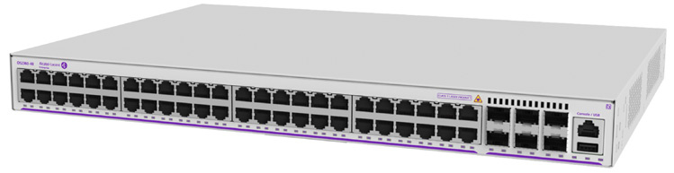

bp-os2360-datasheet

R（触发场景）
- SMB/分支多楼层、需要堆叠统一管理或 10G 上联的接入选型
- 2260（无堆叠）与 2360（可堆叠）之间的取舍
- P48X 740W PoE 预算规划、全光 U24X/U48X 型号报价
- 虚拟机箱（VC）分裂保护、配置回滚等 SMB 高可用设计
I（核心理念）
OS2360 是 SMB 线的"可堆叠"档：AOS 全功能 + WebView 2.0 + 10G 虚拟机箱（10 GigE virtual chassis bandwidth up to 8 units (stacking) or 216 ports，原文p8 ），定位于分支/校园工作组"机柜外收敛方案"（工作站/AP/IP 话机）。层级：SMB 接入，介于 2260（WebSmart+）与企业价值接入 6360 之间。
A1（与相邻系列选型差异）
- vs OS2260：2360 加了堆叠（VC 8 台）、X 型 2x10G SFP+ 上联、MAC 表 32k（2260 仅 16k）、静态路由 32 条（2260 仅 2 条）；价格高于 2260。
- vs OS6360：6360 VC 同为 8 台但规模到 416 口、有 NDcPP EAL1 认证与 Lightning Config；2360 无认证背书、无许可升速路径。
- 全光接入（24/48x100/1000Base-FX SFP 用户口）在 SMB 线只有 2360-U24X/U48X 提供（原文p11 ）。
A2（规格细节速查表）
机型矩阵（原文p9 表 1 / 原文p11 商用型号）： | 型号 | 用户口 1G RJ45 | 1G SFP 上联 | 10G SFP+ 上联 | VFL 口（1G 上联或 10G 堆叠） | PoE 预算 | |---|---|---|---|---|---| | OS2360-24 | 24 | 2 | 0 | 2 | — | | OS2360-P24 | 24 PoE+ | 2 | 0 | 2 | 195W | | OS2360-48 | 48 | 4 | 0 | 2 | — | | OS2360-P48 | 48 PoE+ | 4 | 0 | 2 | 370W | | OS2360-P24X | 24 PoE+ | 0 | 2 | 2 | 370W | | OS2360-P48X | 48 PoE+ | 2 | 2 | 2 | 740W | | OS2360-U24X | 24x100/1000FX SFP | 2 | 2 | 2 | — | | OS2360-U48X | 48x100/1000FX SFP | 2 | 2 | 2 | — |
- 上联与堆叠：2x10GE VFL 堆叠容量 40 Gb/s（原文p10 ）；VC 最多 8 台/216 口（原文p8 ）；1+N 冗余管理器 + Split VC 自动检测恢复（原文p12 ）。
- 交换容量与包转发（原文p10 ）：全双工+堆叠 92（24 口）/144（48 口）/128（P24X）/180 Gb/s（P48X）；帧率 68.4/107.1/95.2/133.9 Mpps；ASIC 128~216 Gb/s。
- 电源体系：单一内置电源、Backup N/A（原文p10 ）；PoE 满载 427.2W（P24X）/891.2W（P48X）；Perpetual/Fast PoE+ 全 PoE 型号（原文p8 ）。
- Layer 特性：L2+ 静态路由 IPv4/IPv6（32 条 IPv4 + 16 条 IPv6 静态路由、24 IPv4 + 4 IPv6 接口，原文p13 ）；32k MAC、4k VLAN、2k+2k ACL、12KB 巨帧、<4µs（原文p12 ）；无动态路由/SPB/VXLAN/MPLS/MACsec。
- 硬件平台：全系 1GHz MIPS 双核、1GB RAM、512MB flash、16MB 包缓冲（原文p10 ）。
- 功耗/环境：待机 13.1~37.1W；0~45°C；MTBF 565k~1632k 小时（原文p10 -原文p11 ）。
- 规格红线：无备份电源；U 型无 PoE；10G 上联仅 X 型 2 口。
E（适用场景）
- SMB/分支多交换机堆叠为一台管理（VC 8 台、216 口一个 IP）
- 园区工作组收敛：IP 话机 + AP + 工作站同柜（Auto VoIP VLAN，原文p9 ）
- 全光楼宇布线（U24X/U48X 全 SFP 用户口）
- P48X 891W 满载支撑 48 口满配 PoE+ 话机/AP
B（限制与坑）
- 与 2260 同样 Backup power N/A——机箱级电源冗余要上 6360 及以上（原文p10 ）
- 10G 上联每台最多 2 口（X 型），高密 Wi-Fi 上行要评估 6360/6370
- 无 802.3bt/多千兆口——Wi-Fi 6/7 95W AP 供电需升 6360-P48X 以上
- U24X/U48X 全光型无 PoE，选型时别把光口当供电口（原文p11 ）
- 2260 数据表的星号特性在 2360 已多为正式特性（DoS 引擎、port mapping、sFlow 均无星号，原文p12 ），可作两系列功能成熟度对比点
来源：bp-omniswitch-datasheets DOC 2（p8-14，DID21043003EN May 2025）；verified.md C1/P2/P3/F1/F4